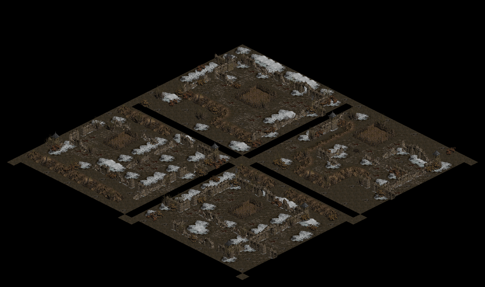
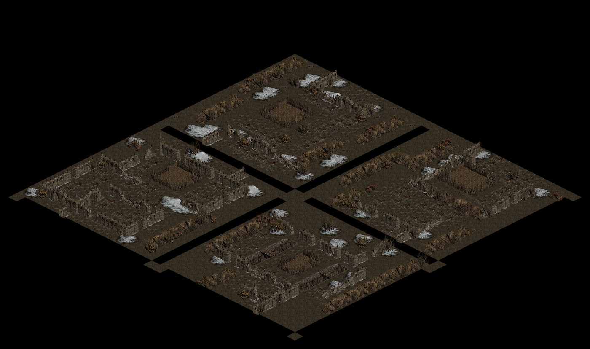
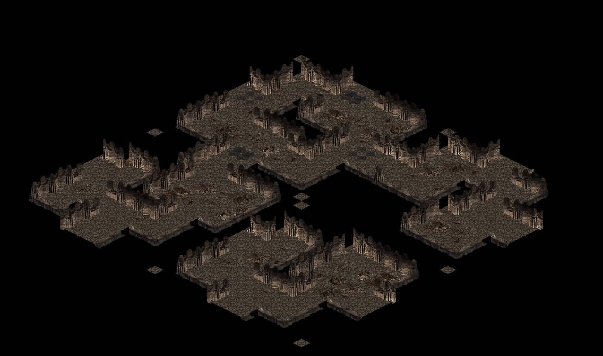

Nihlathak's Temple & Halls of Vaught — prison quads
Same 34×34 arena scale as before; only the source DS1 chunks changed. Composed ground + wall render, straight from the world builder.

Nihlathak's Temple — prisonaa/ab/ba/bb · 89.6% floor, one connected region

Halls of Vaught — prisoncc/cd/dc/dd · 89.6% floor, one connected region

Before — Baal's-lair quarters (what both areas used until now) · 54% floor, 10 islands